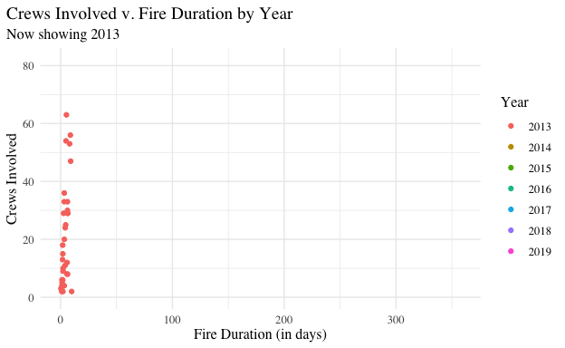
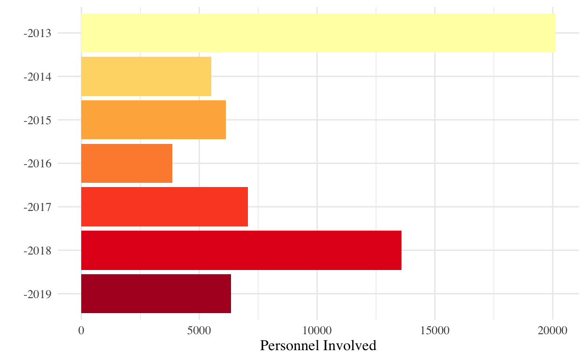

Introduction
California is home to some of the deadliest and most destructive wildfires in the world. Although every year the state experiences this misfortune, the 2020 California wildfire season set all time records. In fact, five out of the six largest fires in the state’s history were recorded during 2020 (Guardian). The damage caused by the wildfires extended far beyond the burning of millions of acres of trees. In addition to the environmental impact of the wildfires, living conditions became unbearable for many California residents. For some, the air quality was so poor that people could not even leave their homes without having to worry about smoke inhalation. Researchers have even been led to believe that the smoke and air quality led to hundreds of excess deaths in California cities (Guardian). Because of this recent and ongoing tragedy, we wanted to learn more about the history of wildfires in the great state of California.
To dive deeper into California’s history of wildfires, we found a dataset that contains detailed records of wildfires that took place in California between 2013 and 2019. The dataset comes from the website Kaggle.com which serves as a platform to publish datasets and allows users to build and publish data models. While the original dataset contained observations for over 1,600 wildfires, we chose to simplify the dataset. We did so by removing all rows that did not have an observation for the number of crews involved in fighting the fire, resulting in 171 observations. Further, the original dataset included 40 different variables of study however we decided to focus on the 18 variables that would best allow us to analyze the social and environmental impact of the fires.
The dataset includes the latitude, longitude, and county where each wildfire took place. We will use these variables to understand the role location plays in the amount of destruction caused by the wildfires. We also plan to study the impact that the fires play on individual’s lives through the number of injuries and fatalities that were caused by the fires as well as the number of structures that were damaged or destroyed. Further, the number of administrators on duty, personnel involved, fire crews involved, fire engines, helicopters and water tenders in the dataset will allow us to learn more about the resources that are required and supplied in order to fight the fires. We will also look to better understand the year to year differences between wildfires reported in California as well as the county to county differences. Finally, through analyzing the start and end dates of the wildfires as well as the number of acres burned, we will focus on the amount of damage done based on the duration of the fires.
There is clearly lots of data to work with, however we will primarily focus on the location, damage caused, and resources required by the wildfires. We plan to create proportional symbol maps to analyze the geographic impact of the California wildfires throughout the state. By doing this, it will help draw attention to the areas that need support the most. A visualization of this type will also aid those who live in the state and show them what areas are most prone to wildfires. Additionally, scatterplots will allow us to highlight the correlation between the amount of resources provided to a wildfire and the fire’s duration. We will also compare the scatterplots by county, in order to investigate whether the counties with the highest amount of damage are receiving the most care. Further, boxplots will highlight the differences between the median durations of fires across the years in study, giving us a look into the trends across the state as a whole. Through this analysis we hope to deepen public understanding of the wildfires as the trends in damage caused by the wildfires has been progressing in recent years.
While the 2020 wildfire season was the worst ever recorded, the numbers in the years prior have not been much better. The size and frequency of the wildfires have been gradually worsening in the years prior to 2020, ranking as some of the largest and most deadliest fires in the history of the state. Camp Fire is the deadliest wildfire recorded in the state of California, killing 85 people in 2018. Another fire which occurred in 2018, called the Mendocino Complex, was the second largest fire recorded in California’s history (LA Times). Both Camp Fire and Mendocino Complex are included in our dataset and analysis. It is important that our data set includes such historically significant fires such as these because it will allow us to better understand (and hopefully prevent) some of the most tragic wildfires in California history. However, in terms of visualization, because of large outliers such as the Mendocino Complex, it is harder to see the trends in the more common size fires. For this reason, in one of our preliminary data visualizations we scaled the x-axis (number of acres burned) using log base 10 so that the data is more spread out for running regressions and discovering trends.
It’s no secret that one of the best ways to convey information is through visualizing it. Through representing the information in our dataset visually, we hope to bring the much necessary attention to California wildfires. Although it is an intimidating thought, California will have to face many more of these deadly wildfires in its future, and with the changing climate, the outlook is not great. Through studying wildfires in the recent past, we hope to bring to light information that could help guide how fires are managed in California for the future.
The following code and graphics will all be completed using the data visualization software R Studios.
To dive deeper into California’s history of wildfires, we found a dataset that contains detailed records of wildfires that took place in California between 2013 and 2019. The dataset comes from the website Kaggle.com which serves as a platform to publish datasets and allows users to build and publish data models. While the original dataset contained observations for over 1,600 wildfires, we chose to simplify the dataset. We did so by removing all rows that did not have an observation for the number of crews involved in fighting the fire, resulting in 171 observations. Further, the original dataset included 40 different variables of study however we decided to focus on the 18 variables that would best allow us to analyze the social and environmental impact of the fires.
The dataset includes the latitude, longitude, and county where each wildfire took place. We will use these variables to understand the role location plays in the amount of destruction caused by the wildfires. We also plan to study the impact that the fires play on individual’s lives through the number of injuries and fatalities that were caused by the fires as well as the number of structures that were damaged or destroyed. Further, the number of administrators on duty, personnel involved, fire crews involved, fire engines, helicopters and water tenders in the dataset will allow us to learn more about the resources that are required and supplied in order to fight the fires. We will also look to better understand the year to year differences between wildfires reported in California as well as the county to county differences. Finally, through analyzing the start and end dates of the wildfires as well as the number of acres burned, we will focus on the amount of damage done based on the duration of the fires.
There is clearly lots of data to work with, however we will primarily focus on the location, damage caused, and resources required by the wildfires. We plan to create proportional symbol maps to analyze the geographic impact of the California wildfires throughout the state. By doing this, it will help draw attention to the areas that need support the most. A visualization of this type will also aid those who live in the state and show them what areas are most prone to wildfires. Additionally, scatterplots will allow us to highlight the correlation between the amount of resources provided to a wildfire and the fire’s duration. We will also compare the scatterplots by county, in order to investigate whether the counties with the highest amount of damage are receiving the most care. Further, boxplots will highlight the differences between the median durations of fires across the years in study, giving us a look into the trends across the state as a whole. Through this analysis we hope to deepen public understanding of the wildfires as the trends in damage caused by the wildfires has been progressing in recent years.
While the 2020 wildfire season was the worst ever recorded, the numbers in the years prior have not been much better. The size and frequency of the wildfires have been gradually worsening in the years prior to 2020, ranking as some of the largest and most deadliest fires in the history of the state. Camp Fire is the deadliest wildfire recorded in the state of California, killing 85 people in 2018. Another fire which occurred in 2018, called the Mendocino Complex, was the second largest fire recorded in California’s history (LA Times). Both Camp Fire and Mendocino Complex are included in our dataset and analysis. It is important that our data set includes such historically significant fires such as these because it will allow us to better understand (and hopefully prevent) some of the most tragic wildfires in California history. However, in terms of visualization, because of large outliers such as the Mendocino Complex, it is harder to see the trends in the more common size fires. For this reason, in one of our preliminary data visualizations we scaled the x-axis (number of acres burned) using log base 10 so that the data is more spread out for running regressions and discovering trends.
It’s no secret that one of the best ways to convey information is through visualizing it. Through representing the information in our dataset visually, we hope to bring the much necessary attention to California wildfires. Although it is an intimidating thought, California will have to face many more of these deadly wildfires in its future, and with the changing climate, the outlook is not great. Through studying wildfires in the recent past, we hope to bring to light information that could help guide how fires are managed in California for the future.
The following code and graphics will all be completed using the data visualization software R Studios.
What can we learn from geographical trends?

The above graph shows the geographic locations of each of the wildfires in our dataset. The smallest fires are distinguished by both the smallest points and the largest fires (determined by the number of acres of land they burned) are shown with larger points.
The graph highlights a few interesting findings. First, the fires with the greatest number of acres burned seem to occur in northern California. Although there are many noteworthy fires shown on the map, two in particular seem to stand out as outliers for their overwhelming number of acres burned. The largest fire, shown by the biggest yellow point, occurred in 2018 and is called the Carr Fire. The wildfire burned 229,651 acres in Redding California and killed 3 firefighters and 5 civilians. It destroyed 1,614 structures and damaged an additional 61 fires. The second largest wildfire, shown by the large, orange point and discussed above, is Camp Fire. Camp Fire, which occurred in 2018, burned 153, 336 acres in Butte County, California. At the time, Camp Fire was the deadliest and most destructive wildfire in California’s history. 85 people died as a result of Camp Fire and an additional 3 were injured by the fire. In order to contain Camp Fire, 1,065 firefighter personnel were involved. Both Camp Fire and Carr Fire are labeled on the interactive map above for reference.
What’s especially interesting about Camp Fire and Carr Fire both occurring in northern California is that media attention often focuses predominantly on Southern California for having a high prevalence of especially destructive fires. According to the map, fires in Southern California (surrounding Los Angeles and San Diego) all appear to be between 10,000 and 50,000 acres burned. Since the size of the fires does not reflect the amount of media attention provided to the fires, it might suggest that there is something about the fires in Southern California that garners media attention. One possible explanation could be the proximity to urban populations. The large fires in northern California occurred predominantly in expansive nature parks or reserves where there could be fewer people at risk if the fire keeps spreading. However, with the large cluster of smaller fires around Los Angeles and San Diego, there could be a lot more people and homes in harm’s way should the fire not be contained in an extremely timely manner.
In addition to the cluster of fires in southern California, there also appears to be a pattern in the location of the fires starting in northern California and ending east of San Jose. All of these fires seemed to have burned around 5,000 acres based on the size of the points in the map. The location of the fires seem to follow a diagonal line. The locations of the fires closely follow the locations of forest preserves and national parks on the eastern side of California. National parks such as Yosemite National Forest, Stanislaus National Forest, Sierra National Forest, and Sequoia National Park are all labeled on the interactive map above for reference.
Overall, the map suggests that the fires with the largest destruction occur in northern California however fires in Southern California are very worrisome for their proximity to urban populations in Los Angeles and San Diego. Further, the diagonal line of fires on the eastern side of California closely follow the locations of national parks, which can be the host of more frequent smaller fires.
In addition to focusing on the impact of the geographic location of the wildfires, we also want to explore how firefighting resources are utilized within California. The below plot highlights the relationship between the number of firefighting crews involved to contain the wildfire versus the number of acres burned by the fire. We chose to use a logarithmic (base 10) scale for the x-axis because without the logarithmic scale, a few extremely large fires meant that it was difficult to differentiate the smaller fires. However, since it can be difficult to convert between a log scale to understand the number of acres burned, we decided to create an interactive graph where one can hover over the point to see the number of acres burned (not using a log scale).
The graph highlights a few interesting findings. First, the fires with the greatest number of acres burned seem to occur in northern California. Although there are many noteworthy fires shown on the map, two in particular seem to stand out as outliers for their overwhelming number of acres burned. The largest fire, shown by the biggest yellow point, occurred in 2018 and is called the Carr Fire. The wildfire burned 229,651 acres in Redding California and killed 3 firefighters and 5 civilians. It destroyed 1,614 structures and damaged an additional 61 fires. The second largest wildfire, shown by the large, orange point and discussed above, is Camp Fire. Camp Fire, which occurred in 2018, burned 153, 336 acres in Butte County, California. At the time, Camp Fire was the deadliest and most destructive wildfire in California’s history. 85 people died as a result of Camp Fire and an additional 3 were injured by the fire. In order to contain Camp Fire, 1,065 firefighter personnel were involved. Both Camp Fire and Carr Fire are labeled on the interactive map above for reference.
What’s especially interesting about Camp Fire and Carr Fire both occurring in northern California is that media attention often focuses predominantly on Southern California for having a high prevalence of especially destructive fires. According to the map, fires in Southern California (surrounding Los Angeles and San Diego) all appear to be between 10,000 and 50,000 acres burned. Since the size of the fires does not reflect the amount of media attention provided to the fires, it might suggest that there is something about the fires in Southern California that garners media attention. One possible explanation could be the proximity to urban populations. The large fires in northern California occurred predominantly in expansive nature parks or reserves where there could be fewer people at risk if the fire keeps spreading. However, with the large cluster of smaller fires around Los Angeles and San Diego, there could be a lot more people and homes in harm’s way should the fire not be contained in an extremely timely manner.
In addition to the cluster of fires in southern California, there also appears to be a pattern in the location of the fires starting in northern California and ending east of San Jose. All of these fires seemed to have burned around 5,000 acres based on the size of the points in the map. The location of the fires seem to follow a diagonal line. The locations of the fires closely follow the locations of forest preserves and national parks on the eastern side of California. National parks such as Yosemite National Forest, Stanislaus National Forest, Sierra National Forest, and Sequoia National Park are all labeled on the interactive map above for reference.
Overall, the map suggests that the fires with the largest destruction occur in northern California however fires in Southern California are very worrisome for their proximity to urban populations in Los Angeles and San Diego. Further, the diagonal line of fires on the eastern side of California closely follow the locations of national parks, which can be the host of more frequent smaller fires.
In addition to focusing on the impact of the geographic location of the wildfires, we also want to explore how firefighting resources are utilized within California. The below plot highlights the relationship between the number of firefighting crews involved to contain the wildfire versus the number of acres burned by the fire. We chose to use a logarithmic (base 10) scale for the x-axis because without the logarithmic scale, a few extremely large fires meant that it was difficult to differentiate the smaller fires. However, since it can be difficult to convert between a log scale to understand the number of acres burned, we decided to create an interactive graph where one can hover over the point to see the number of acres burned (not using a log scale).
How are resources utilized within California?
The graph suggests that wildfires which burned less than 100 acres (labeled between 1 and 2 on the x-axis) required fewer than 20 firefighting crews to contain the fire. Similarly, fires which burned between 100 and 1,000 acres (shown between 2 and 3 on the x-axis) could be contained with less than 30 firefighting crews. Interestingly, there seems to be an outlier fire, which burned 580 acres but required over 80 firefighting crews. There also seems to be a sharp increase in the number of crews needed to contain fires which burn between 3,000 and 50,000 acres (between 3.5 and 4.5 on the x-axis).
To further understand the trends in the number of crews needed to fight the fires, we added a Loess regression line to the data. The Loess regression is able to fit a smooth curve across the data points and is beneficial for understanding patterns that a linear regression could miss. What’s most intriguing about the Loess regression line within the graph is that it appears to increase at a nearly constant rate between 1 and 3 (or between 10 and 10,000 acres). However as wildfires burn over 10,000 acres there seems to be a steeper increase in the number of crews required.
The regression line seems to suggest that fewer crews were provided to fight the two largest fires, which burned 153,336 and 229,651 acres. While we have analysed the geographic importance of these 2 fires above, this graph seems to suggest that there were not enough crews available to assist in fighting the fires. Possible explanations for the small number of crews fighting the largest fires could have to do with the timing of the fires. One possible explanation for this phenomenon is that the largest fire, which we will call the Carr Fire, began on July 23, 2018 and lasted for over 164 days. This means that Carr Fire was not extinguished until January 4, 2019. The second largest fire, known as Camp Fire began on November 8,2018 and lasted for 17 days. This means that there was an overlapping period where resources had to be split between the two fires. Further, since the Carr Fire lasted for over 164 days, there were probably many other fires occurring at the same time, which could have made it difficult to deploy enough crews to contain the fire in a timely manner.
To further understand the trends in the number of crews needed to fight the fires, we added a Loess regression line to the data. The Loess regression is able to fit a smooth curve across the data points and is beneficial for understanding patterns that a linear regression could miss. What’s most intriguing about the Loess regression line within the graph is that it appears to increase at a nearly constant rate between 1 and 3 (or between 10 and 10,000 acres). However as wildfires burn over 10,000 acres there seems to be a steeper increase in the number of crews required.
The regression line seems to suggest that fewer crews were provided to fight the two largest fires, which burned 153,336 and 229,651 acres. While we have analysed the geographic importance of these 2 fires above, this graph seems to suggest that there were not enough crews available to assist in fighting the fires. Possible explanations for the small number of crews fighting the largest fires could have to do with the timing of the fires. One possible explanation for this phenomenon is that the largest fire, which we will call the Carr Fire, began on July 23, 2018 and lasted for over 164 days. This means that Carr Fire was not extinguished until January 4, 2019. The second largest fire, known as Camp Fire began on November 8,2018 and lasted for 17 days. This means that there was an overlapping period where resources had to be split between the two fires. Further, since the Carr Fire lasted for over 164 days, there were probably many other fires occurring at the same time, which could have made it difficult to deploy enough crews to contain the fire in a timely manner.
How does the duration of the fires change year-to-year?
Now that we understand where the fires took place and how resources were being used to help, we wanted to explore how the duration of forest fires has changed over time. We chose to use a box-plot to represent this data because we believe it gives the best visualization of how long the majority of fires lasted, from the 25th to 75th percentiles, while also showing the outliers. The graph above specifically represents the range of fire durations in each given year from 2013 to 2019. We also chose to represent each fire with a dot over the box-plot in order to show how many fires the plots are accounting for. Further, by interacting with each point on the plot, one can see the number of acres burned by each fire. This way, one can also see the relationship between fire duration and acres burned by each wildfire.
The graph above suggests that the duration of fires from 2013 to 2016 stayed pretty consistent, with all the fires lasting for less than 30 days. The one exception to this trend is a 2016 wildfire which lasted over 300 days and burned 4,474 acres in Fresno . This Fresno fire is denoted on the boxplot by the green dot at the top of the boxplot for 2016. It is interesting that the fire in Fresno had such a significantly longer duration, when it only burned half as many acres as the largest fire that year.
It can also be seen from the graph that in 2017 and 2018 there was a large increase in the duration of most wildfires. What makes 2017 particularly interesting is that the fire duration increases so drastically from the earlier years but from 2013 to 2017 there was not a large increase in the amount of acres burned by the fires. However, fires from 2018 tell a completely different story. The wildfires in 2018 went down in history as some of the worst fires recorded in California’s history. With that being said, the inner-quartile range for fires in 2018 is much smaller than 2017. This suggests that there were a few historically large fires from 2018 but that the majority of the 2018 fires lasted between 150 and 190 days. In 2018 it seems to be that there were a few outliers in terms of extremely long fires but also outliers on the lower end of the spectrum in terms of their duration.
Another interesting finding that can be gathered from the graph is that 2017 had the greatest amount of variation in terms of fire length. 2017 has the largest range for fire durations, with fires that were as short as 50 days and others as long as 230 days.The dots show us that the fires during 2017 were not very consistent, but varied quite greatly causing the large interquartile range that is seen on the plot. In contrast to this, 2018 had a slightly lower median duration length. However, although the median was smaller, the interquartile range is much smaller showing that the fires were consistently pretty bad during that time period. Therefore, although 2017 has a higher median and a large range, 2018 has a larger proportion of fires with consistent long durations, which is why it was recorded as a much more severe year than the previous.
It can also be seen from this graph that 2019 did not have many fires with long durations, and in fact followed more closely to the trends seen between 2013 and 2016. While we cannot say for sure the reasoning behind the longer fire durations in 2017 and 2018, possible explanations could range from environmental factors such as the amount of rain from earlier in the year to the geographical locations of the fires or to the amount of resources that could be provided for the fires. What we can say for sure though is that there must have been something special about the conditions of the forests or the weather during 2017 and 2018 that made the fires that much worse than in the past.
The graph above suggests that the duration of fires from 2013 to 2016 stayed pretty consistent, with all the fires lasting for less than 30 days. The one exception to this trend is a 2016 wildfire which lasted over 300 days and burned 4,474 acres in Fresno . This Fresno fire is denoted on the boxplot by the green dot at the top of the boxplot for 2016. It is interesting that the fire in Fresno had such a significantly longer duration, when it only burned half as many acres as the largest fire that year.
It can also be seen from the graph that in 2017 and 2018 there was a large increase in the duration of most wildfires. What makes 2017 particularly interesting is that the fire duration increases so drastically from the earlier years but from 2013 to 2017 there was not a large increase in the amount of acres burned by the fires. However, fires from 2018 tell a completely different story. The wildfires in 2018 went down in history as some of the worst fires recorded in California’s history. With that being said, the inner-quartile range for fires in 2018 is much smaller than 2017. This suggests that there were a few historically large fires from 2018 but that the majority of the 2018 fires lasted between 150 and 190 days. In 2018 it seems to be that there were a few outliers in terms of extremely long fires but also outliers on the lower end of the spectrum in terms of their duration.
Another interesting finding that can be gathered from the graph is that 2017 had the greatest amount of variation in terms of fire length. 2017 has the largest range for fire durations, with fires that were as short as 50 days and others as long as 230 days.The dots show us that the fires during 2017 were not very consistent, but varied quite greatly causing the large interquartile range that is seen on the plot. In contrast to this, 2018 had a slightly lower median duration length. However, although the median was smaller, the interquartile range is much smaller showing that the fires were consistently pretty bad during that time period. Therefore, although 2017 has a higher median and a large range, 2018 has a larger proportion of fires with consistent long durations, which is why it was recorded as a much more severe year than the previous.
It can also be seen from this graph that 2019 did not have many fires with long durations, and in fact followed more closely to the trends seen between 2013 and 2016. While we cannot say for sure the reasoning behind the longer fire durations in 2017 and 2018, possible explanations could range from environmental factors such as the amount of rain from earlier in the year to the geographical locations of the fires or to the amount of resources that could be provided for the fires. What we can say for sure though is that there must have been something special about the conditions of the forests or the weather during 2017 and 2018 that made the fires that much worse than in the past.
How does the number of crews involved with the fires change year-to-year?

After taking a deep dive into the different durations of fires between 2013 and 2019, we wanted to see how the year-by-year changes in fire durations related to the number of crews that were involved fighting the fires. To best highlight the changes between each year, we decided to animate the graph and change the color of the points to represent different years.
The graph suggests that in 2013, while the fires did not last long, there was a large spread in the number of crews that were required in order to contain the fires. The number of crews required in 2013 ranges from just a few crews to over 60, even though fire duration does not exceed 25 days. This suggests that in 2013, the duration of the fires was not a predictor for the number of firefighters needed to extinguish the fires.
Then in 2014, the maximum fire duration is slightly higher than in 2013 but the majority of fires are still relatively short. All of the fires in 2014 lasted fewer than 50 days and required fewer than 30 crews except for a single outlier that required over 80 crews. Then, 2015 and 2016 follow a similar pattern to 2014. The majority of fires are short in their duration and do not require a large number of crews. All fires in 2015 required fewer than 40 crews and lasted fewer than 2015 days. Similarly, in 2016 (except for the outlier lasting over 300 days discussed above), all fires lasted fewer than 20 days and required no more than 40 crews. This suggests that the environmental factors and resources required to fight the fires between 2104 and 2016 were very similar.
What’s particularly interesting about the Fresno fire in 2016 which lasted over 300 days is that there were very few crews allocated to the fire. This could mean that since the fire lasted so long, resources continuously needed to be diverted to other fires which could be contained more quickly.
As predicted by the boxplot above, the durations of the fires in 2017 and 2018 were larger than the previous years. However, it’s interesting that even with their long duration, all of the fires in 2017 required fewer than 30 crews. 2018 follows a similar pattern to 2017. Regardless of fire duration, all but one fire in 2018, required fewer than 20 crews. The trends in 2017 and 2018 further support the notion that fire duration cannot predict the number of crews either required or allocated to fight the fires. One possible explanation for this is that firefighting resources are finite and thus there are not enough crews to be able to continually support large fires. It could be the case that firefighters prioritize fires by their location or it could be that the number of simultaneous fires impacts the amount of resources provided to each wildfire.
The graph suggests that in 2013, while the fires did not last long, there was a large spread in the number of crews that were required in order to contain the fires. The number of crews required in 2013 ranges from just a few crews to over 60, even though fire duration does not exceed 25 days. This suggests that in 2013, the duration of the fires was not a predictor for the number of firefighters needed to extinguish the fires.
Then in 2014, the maximum fire duration is slightly higher than in 2013 but the majority of fires are still relatively short. All of the fires in 2014 lasted fewer than 50 days and required fewer than 30 crews except for a single outlier that required over 80 crews. Then, 2015 and 2016 follow a similar pattern to 2014. The majority of fires are short in their duration and do not require a large number of crews. All fires in 2015 required fewer than 40 crews and lasted fewer than 2015 days. Similarly, in 2016 (except for the outlier lasting over 300 days discussed above), all fires lasted fewer than 20 days and required no more than 40 crews. This suggests that the environmental factors and resources required to fight the fires between 2104 and 2016 were very similar.
What’s particularly interesting about the Fresno fire in 2016 which lasted over 300 days is that there were very few crews allocated to the fire. This could mean that since the fire lasted so long, resources continuously needed to be diverted to other fires which could be contained more quickly.
As predicted by the boxplot above, the durations of the fires in 2017 and 2018 were larger than the previous years. However, it’s interesting that even with their long duration, all of the fires in 2017 required fewer than 30 crews. 2018 follows a similar pattern to 2017. Regardless of fire duration, all but one fire in 2018, required fewer than 20 crews. The trends in 2017 and 2018 further support the notion that fire duration cannot predict the number of crews either required or allocated to fight the fires. One possible explanation for this is that firefighting resources are finite and thus there are not enough crews to be able to continually support large fires. It could be the case that firefighters prioritize fires by their location or it could be that the number of simultaneous fires impacts the amount of resources provided to each wildfire.
What do the changes in the number of injuries, personnel involved, and structures damaged tell us about California wildfires?

Since we know now how fire duration varied over the years, we wanted to investigate the way the number of injuries, personnel involved, and structures damaged also varied over time. We chose to graph this data with bar charts since the values we are representing are counts. The y-axis across all three plots stays consistent in order to provide direct comparison between the three variables displayed on the x axises.
Beginning with the first plot, “Number of Injuries by Year”, we can see that the number of injuries over time has been following an overall decreasing rate, starting from 2013 to 2019. This is very interesting because as we can see in the third plot, the number of structures damaged had an overall increasing pattern. There is no way to know from the data, but this leads us to believe that because more time and resources went to helping people, more structures were damaged as more injuries were avoided.
Taking a deeper look into the third plot, “Structures Damaged by Year”, the number of structures damaged was consistently low from 2013-2016 but had a sudden massive increase in 2017 and has stayed relatively high ever since. The data shown in 2017 and 2018 relates back to the long duration times which were shown in the previous graph above. One can be led to believe that because the fires lasted longer, more structures were damaged as a result. However, 2019 did not burn a large amount of acres nor have long duration times which is why it is very intriguing that there were still lots of structures damaged during that time period.
Plot two, “Number of Personnel Involved by Year”, was the most predictable out of the three plots based on our past analysis. The time period from 2014-2016 did not have many significant fires, which is why a large amount of personnel was not required to contain them. With the rise of fires in 2017 and 2018, it is sensible that the amount of personnel involved had to increase in order to combat them. The only peculiar part of this graph is the large amount of personnel that was called upon in 2013, for it surpasses 2018 which had a significantly greater amount of acres burned. Although there is no way to confirm this with the data, our hypothesis is that over time as technology advanced, less attendants were needed to contain the fires which is the reason for the sudden drop in personnel. However we now know that the forest fire season in California has only been worsening, and as it can be seen in plot three, the damages are not diminishing, therefore it is evident that although technology has improved, the need for personnel is still very much present.
Beginning with the first plot, “Number of Injuries by Year”, we can see that the number of injuries over time has been following an overall decreasing rate, starting from 2013 to 2019. This is very interesting because as we can see in the third plot, the number of structures damaged had an overall increasing pattern. There is no way to know from the data, but this leads us to believe that because more time and resources went to helping people, more structures were damaged as more injuries were avoided.
Taking a deeper look into the third plot, “Structures Damaged by Year”, the number of structures damaged was consistently low from 2013-2016 but had a sudden massive increase in 2017 and has stayed relatively high ever since. The data shown in 2017 and 2018 relates back to the long duration times which were shown in the previous graph above. One can be led to believe that because the fires lasted longer, more structures were damaged as a result. However, 2019 did not burn a large amount of acres nor have long duration times which is why it is very intriguing that there were still lots of structures damaged during that time period.
Plot two, “Number of Personnel Involved by Year”, was the most predictable out of the three plots based on our past analysis. The time period from 2014-2016 did not have many significant fires, which is why a large amount of personnel was not required to contain them. With the rise of fires in 2017 and 2018, it is sensible that the amount of personnel involved had to increase in order to combat them. The only peculiar part of this graph is the large amount of personnel that was called upon in 2013, for it surpasses 2018 which had a significantly greater amount of acres burned. Although there is no way to confirm this with the data, our hypothesis is that over time as technology advanced, less attendants were needed to contain the fires which is the reason for the sudden drop in personnel. However we now know that the forest fire season in California has only been worsening, and as it can be seen in plot three, the damages are not diminishing, therefore it is evident that although technology has improved, the need for personnel is still very much present.
Discussion:
As we wrap up our project we want to highlight a few limitations to the conclusions we could draw from our analysis. First and foremost our conclusions were limited by our lack of formal knowledge about the environmental factors that cause wildfires. Many of the outliers in our visualizations could possibly be explained scientifically, such as abnormal fire duration length, however, we do not have the vast knowledge to make those claims.
Further, the number of variables we could explore in our analysis was heavily limited by missing data. Many factors we wanted to explore such as fatalities, number of fire engines / water tenders used, as well as the number of structures damaged by the fires had a multitude of missing values so we could not conduct thorough analysis or create data visualizations with these variables. Unlike what one might suspect, we could not assume that a value of “NA” corresponded to 0 because there could have been unique factors about the wildfires with missing values. For example, it could be that whoever recorded the data for specific wildfires chose not to report certain variables (ex. fatalities). This could mean that a value of “NA” for a variable such as fatalities just means the count was not reported, not that a wildfire did not cause any fatalities. For this reason, we chose not to analyze variables with an extremely large amount of missing data but in the future we would love to conduct more robust analysis if the data is available.
In future analysis we also would have loved to analyze wildfires which happened in 2020. As we have discussed, wildfires in 2020 broke records in California for the vast amount of destruction they caused. When it becomes available we would love to conduct further analysis including 2020 wildfire data in order to better understand possible trends and causes for such a dangerous year.
In addition to including 2020 data, it would have been helpful if our dataset had included unique names for each fire. While we were able to look up names for some of the largest fires in our dataset, it would have been helpful to have some kind of unique identifier to draw further comparisons. These comparisons could include looking at the top 10 largest, most deadliest, or even longest-lasting fires.
Finally, it would also be useful to have data on the smoke produced by each fire. This data would allow us to better understand the social and health impact of the wildfires in California. Over the past few years, many California residents have had to worry about smoke inhalation due to the immense amount produced in the air due to the wildfires. Further, smoke can travel a great distance not only throughout the state of California but also nearby states. Thus, it would be extremely relevant and significant to better understand the factors and predictors of immense smoke in future analysis.
We hope you have enjoyed learning more about California wildfires through our project and we look forward to conducting further research on such an important topic.
Further, the number of variables we could explore in our analysis was heavily limited by missing data. Many factors we wanted to explore such as fatalities, number of fire engines / water tenders used, as well as the number of structures damaged by the fires had a multitude of missing values so we could not conduct thorough analysis or create data visualizations with these variables. Unlike what one might suspect, we could not assume that a value of “NA” corresponded to 0 because there could have been unique factors about the wildfires with missing values. For example, it could be that whoever recorded the data for specific wildfires chose not to report certain variables (ex. fatalities). This could mean that a value of “NA” for a variable such as fatalities just means the count was not reported, not that a wildfire did not cause any fatalities. For this reason, we chose not to analyze variables with an extremely large amount of missing data but in the future we would love to conduct more robust analysis if the data is available.
In future analysis we also would have loved to analyze wildfires which happened in 2020. As we have discussed, wildfires in 2020 broke records in California for the vast amount of destruction they caused. When it becomes available we would love to conduct further analysis including 2020 wildfire data in order to better understand possible trends and causes for such a dangerous year.
In addition to including 2020 data, it would have been helpful if our dataset had included unique names for each fire. While we were able to look up names for some of the largest fires in our dataset, it would have been helpful to have some kind of unique identifier to draw further comparisons. These comparisons could include looking at the top 10 largest, most deadliest, or even longest-lasting fires.
Finally, it would also be useful to have data on the smoke produced by each fire. This data would allow us to better understand the social and health impact of the wildfires in California. Over the past few years, many California residents have had to worry about smoke inhalation due to the immense amount produced in the air due to the wildfires. Further, smoke can travel a great distance not only throughout the state of California but also nearby states. Thus, it would be extremely relevant and significant to better understand the factors and predictors of immense smoke in future analysis.
We hope you have enjoyed learning more about California wildfires through our project and we look forward to conducting further research on such an important topic.
Sources:
https://www.theguardian.com/us-news/2020/dec/30/california-wildfires-north-complex-record
Appendix: Code
knitr::opts_chunk$set(echo = TRUE)
library(tidyverse)
library(plotly)
library(ggthemes)
final_project_theme = theme_minimal() +
theme(text = element_text(family = "serif", size = 12),
axis.title = element_text(),
plot.title.position = "plot")
fires <- read_csv("CaliforniaFires.csv")
# Map of Wildfires
library(ggmap)
ca <- c(left = -129, bottom = 32, right = -114, top = 42.3)
map <- get_stamenmap(ca, zoom = 5, maptype = "toner-lite")
ggmap(map) +
geom_point(data = fires, aes(x = Longitude, y = Latitude, size = AcresBurned),
alpha = 0.5, color = "orange red") +
labs(
title = "Locations of California Wildfires",
size = "Acres Burned (in thousands)") +
scale_size_area(breaks = 1000 * c(5, 10, 50, 100, 150, 200),
labels = c("5", "10","50", "100","150","200")) +
theme_void() +
theme(text = element_text(family = "serif"))
fires_sorted_acres_burned <- fires[order(fires$AcresBurned),]
#Create leaflet map
library(leaflet)
ca_leaflet_map = leaflet() %>%
setView(lat = 37.978259, lng = -119.417931, zoom = 5.5) %>%
addTiles() %>%
addMarkers(lat = 39.81340, lng =-121.4347 , popup = "Camp Fire (2018)") %>%
addMarkers(lat = 40.65428, lng =-122.6236 , popup = "Carr Fire (2018)")%>%
addMarkers(lat = 37.8651, lng =-119.5383 , popup = "Yosemite National Park") %>%
addMarkers(lat = 38.7949, lng =-120.3055 , popup = "El Dorado National Forest")%>%
addMarkers(lat = 38.2353, lng =-120.0036 , popup = "Stanislaus National Forest")%>%
addMarkers(lat = 37.3427, lng =-119.2244 , popup = "Sierra National Forest")%>%
addMarkers(lat = 36.4864, lng =-118.5658 , popup = "Sequoia National Park")
ca_leaflet_map
#Acres Burned v. Crews Involved Scatterplot
p0 <- ggplot(data = fires, aes(x = log10(AcresBurned), y = CrewsInvolved)) +
geom_point(aes(text = AcresBurned)) +
geom_smooth(method = "loess", se = FALSE) +
final_project_theme +
labs(
title = "Crews Involved v. Log of Acres Burned",
x = "Log of Acres Burned",
y = "Crews Involved")
ggplotly(p0, tooltip = "text")
#Calculating Fire Duration & Creating Boxplot
fires$fire_duration = difftime(fires$Extinguished,fires$Started,units='days')
p1 <- ggplot(data = fires, aes(x = as.factor(ArchiveYear), group = ArchiveYear,
y = fire_duration)) +
geom_boxplot(aes(fill = as.factor(ArchiveYear), alpha = 0.3)) +
geom_jitter(aes(color = as.factor(ArchiveYear), text = AcresBurned)) +
theme_minimal() +
labs(
title = "Calfornia Wildfire Duration by Year",
x = "",
y = "Fire Duration (in days)") +
final_project_theme +
theme(legend.position = "none")
ggplotly(p1, tooltip = "text")
#Create animated scatterplot Crews Involved v. Fire Duration
library(gganimate)
library(png)
library(gifski)
library(glue)
anim1 = ggplot(data = fires, aes(x = fire_duration, y = CrewsInvolved)) +
geom_point(aes(color = as.factor(ArchiveYear)))+
final_project_theme +
labs(x = "Fire Duration (in days)", y = "Crews Involved", col = "Year")+
theme(legend.position = "right",
legend.direction='vertical') +
transition_states(as.factor(ArchiveYear), transition_length = 5,
state_length = 10) +
enter_fade() +
exit_shrink() +
ggtitle("Crews Involved v. Fire Duration by Year",
subtitle = "Now showing {closest_state}")
animate(anim1, nframes = 100, duration = 21)
#Create 3 barcharts
library(gridExtra)
b1 <- ggplot(fires, aes(x = Injuries, y = as.factor(-ArchiveYear))) +
geom_col(aes(fill = as.factor(ArchiveYear)))+
final_project_theme +
theme(legend.position = "none") +
labs(y = "", x = "Injuries") +
scale_fill_brewer(palette = "YlOrRd")
b2 <- ggplot(fires, aes(x = StructuresDamaged, y = as.factor(-ArchiveYear))) +
geom_col(aes(fill = as.factor(ArchiveYear)))+
final_project_theme +
theme(legend.position = "none") +
labs(y = "", x = "Structures Damaged") +
scale_fill_brewer(palette = "YlOrRd")
b3 <- ggplot(fires, aes(x = PersonnelInvolved, y = (as.factor(-ArchiveYear)))) +
geom_col(aes(fill = as.factor(ArchiveYear)))+
final_project_theme +
theme(legend.position = "none") +
labs(y = "", x = "Personnel Involved") +
scale_fill_brewer(palette = "YlOrRd")
# https://forcats.tidyverse.org/reference/fct_reorder.html
grid.arrange(b1, b3, b2, ncol=3)
ggplot(fires, aes(x = PersonnelInvolved, y = (as.factor(-ArchiveYear)))) +
geom_col(aes(fill = as.factor(ArchiveYear)))+
final_project_theme +
theme(legend.position = "none") +
labs(y = "", x = "Personnel Involved") +
scale_fill_brewer(palette = "YlOrRd")
